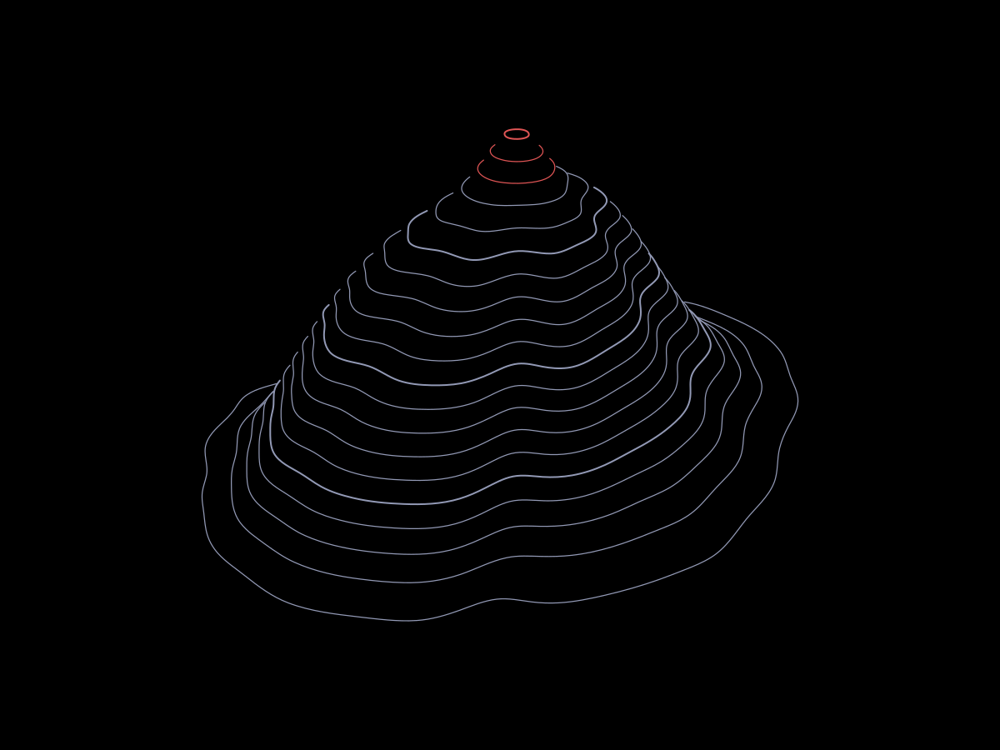

Introducing the Tibba mountain: one landform, every summit on our site

Obvious symbols go generic fast. A studio called Tibba, which means a small hill, drawing a mountain is about as obvious as it gets. So we didn’t want a picture of a mountain. We wanted a map of one, that you could walk.
Today the first thing anyone sees on tibba.design is that map. It counts up from the valley floor, the camera drops into it, and a thin line climbs to the summit. Here is what it is, why we built it, and where to see it.
01The problem
We have always described our work as climbing with a client: base camp, the ascent, the summit, and then the next peak. The mountain had to carry that, without turning into one more stock illustration.
- No stock peaks, no low-poly triangles, no snowy photograph.
- It had to be drawn in the studio’s own language, like the rest of the site.
- It had to move like it was being surveyed rather than rendered.
02What it ships
- One landform generatorEvery mountain on the site, from the hero’s massif to the four client summits, comes from one recipe of summed parts.
- Contour lines, drawn on the GPUMarching squares turn heights into lines; each line is a thin shader ribbon whose width follows the slope.
- Lit and ink statesLit like a relief map in the loader, then flat ink on black as you scroll, so it sits behind text.
- A trail that walksSwitchbacks built from a rounded triangle wave, with a little wobble so no two legs match.
- Four client summitsPart of the same heightfield as the hero, each in its client’s colour, each with its own trail.
- A light phone versionA pre-rendered film of the same scene on small screens, and a still mountain for reduced motion.
How the ground is shaped
- Domain warp pushes the ground sideways before it’s measured, so ridgelines bend.
- Spurs run down from the summit, like the fingers of a hand.
- Flutes are the narrow gullies between them, where rain would run off.


We tuned it in an internal tool, the Mountains lab, with brushes for adding height, erosion passes, and a button that sends a preset straight into the hero. Most of the work was saying no.
03Why it matters
- One change, everywhere. A change to the landform shows up at once in the hero, the summits, the thumbnails and the share card.
- Every illustration is the real mountain. Thumbnails and print come from projecting the heightfield, removing hidden lines and fitting smooth curves, not from tracing.
- One range, seen from two places. The home mountain and the Our Work summits share one heightfield.
- Restraint as a feature. Fewer contours, a single accent colour, one trail instead of five.
04Try it
- On desktop, open the home page and scroll: the mountain morphs from lit to ink, and the trail draws to the summit. Move your cursor for a little parallax.
- On a phone, the same mountain plays as a short film, made from the scene itself.
- With reduced motion on, the mountain stays still. The contours tell the story without the camera moving at all.
About Tibba
Tibba is a design studio for product teams. We work alongside start-ups and growing companies from base camp to summit: product strategy, MVP design, growth design, design systems and fintech products, for clients including Groww, Firstpost, Breathe ESG, and Shyft & Mindhouse.
The mountain is how we draw that climb.